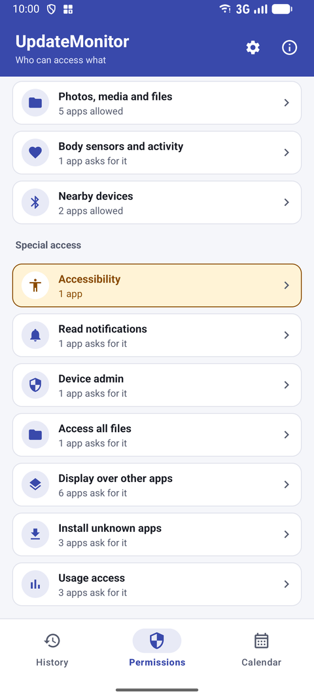

Special app access on Android explained: the 7 most powerful permissions
Some access is so powerful that Android keeps it out of the normal permission screens. What each one does, and when to worry.
Camera, microphone and location are the permissions most people know. But the access that can do the most harm is in a separate place: special app access. These are switches you turn on by hand in Settings, and stalkerware, banking malware and scam apps rely on them.
The 7 kinds of special access
Accessibility
Can read everything on your screen, including messages and passwords as you type them, and tap buttons for you. Meant for screen readers and assistive tools. Highest risk
Settings › Accessibility › Installed apps
Notification access
Can read all your notifications – including messages and one-time login codes – and dismiss them. Used by smartwatches and car apps. High risk
Settings › Apps › Special app access › Notification access
Display over other apps
Can draw on top of other apps: chat bubbles, but also a fake login screen over your banking app. High risk
Settings › Apps › Special app access › Display over other apps
Install unknown apps
Can install other apps from outside the Play Store. Browsers, file managers and chat apps often ask for it. Medium risk
Settings › Apps › Special app access › Install unknown apps
All files access
Can read, change and delete every file on your phone's shared storage: photos, downloads, documents. Medium risk
Settings › Apps › Special app access › All files access
Usage access
Can see which apps you use, when and for how long. Used by screen-time and battery apps. Medium risk
Settings › Apps › Special app access › Usage access
Device admin apps
Can lock the phone, change the screen lock or erase all data, and is harder to uninstall. Used by work-profile and find-my-device apps. High risk
Settings › Security & privacy › Device admin apps
Menu names differ a little per brand and Android version. If you can't find a screen, use the search field at the top of Settings and type its name, for example “special app access”.
Warning signs
- An app you don't recognise with accessibility or notification access.
- A game, wallpaper or “phone cleaner” with any of these switches turned on.
- An app that asks you to turn on accessibility “to work properly”, while it has nothing to do with accessibility.
- A device admin app you didn't add yourself, especially on a phone you bought second-hand or got from someone else.
Android 13 and later blocks accessibility and notification access for many apps installed from outside an app store (restricted settings). If an app asks you to work around that, be extra careful – see is it safe to install an APK?
All special access on one screen

Android spreads these switches over several menus. UpdateMonitor's Permissions tab puts them together under Special access, shows which apps have each one and since when, and takes you to the right Android screen with one tap. Accessibility is highlighted because it's the most powerful of all.
To turn access off, open the Android screen, tap the app and switch it off. For device admin apps, deactivate the app there first; after that you can uninstall it normally.
Frequently asked questions
Which special access is the most dangerous?
Accessibility. An app with accessibility access can read your screen and act for you, which is why banking malware and stalkerware ask for it. Only screen readers and real assistive tools should have it.
Why can't I uninstall an app?
It may be registered as a device admin app. Deactivate it under Settings → Security & privacy → Device admin apps, then uninstall it. On a company phone, check with your IT department first.
Is “Display over other apps” always bad?
No. Chat bubbles, screen-dimming apps and some navigation apps use it legitimately. It's a concern when an app has no clear reason to show anything on top of other apps.
Watch: Which apps can use your camera, microphone or location?
The Permissions tab: every kind of access, which apps really have it, and since when. About a minute, with captions.
Watch on YouTubeUpdateMonitor – free for Android
All permissions and special access on one screen, with the date each app got it – and nothing ever leaves your phone.